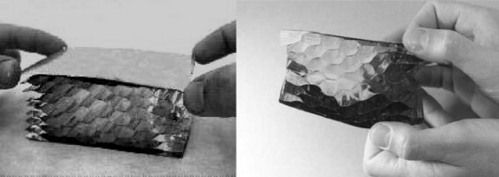
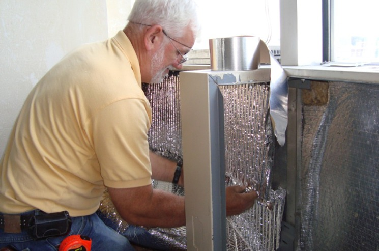

가스충전단열재 Gas-filled panels (GFPs) Insulation은 진공단열패널(VIP)과 유사한 기술로 진공단열패널(VIP)시 필요한 '진공'대신에 공기보다 열전도율이 낮은 아르곤(Ar), 크립톤(Kr) 및 제논(Xe)을 적용한 것이다.

가스충전패널(GFP) 내의 저전도율 가스농도를 유지시켜주는 것과 공기 및 수분의 침투를 피하는 것이 가스충전패널의 단열 성능을 결정하게됩니다.
가스충전패널(GFP)에 적용된 가스보다는 진공상태가 단열 성능은 더 좋지만, 가스충전패널을 구성하고 있는 격자구조때문에 VIP와 같이 내부 진공에 견디지 않아도 되고 더 적은 공간과 더 얇은 두께로 단열에 효과적입니다.

가스충전패널(GFP) 프로토타입의 열전도율은 0.004 W/mK 정도로, 이론적으로 계산된 것보다는 꽤 높은 편입니다.
가스충전패널(GFP) 역시 진공단열패널(VIP)의 구성과 비슷해 VIP의 장단점을 가지고 있지만, 실제 현장에서 적용되는 빈도가 아직은 적은 상태입니다. 특히 우리나라에서는 거의 찾아보기가 어렵다고 알려져 있습니다.
https://www.energy.gov/articles/berkeley-labs-gas-filled-insulation-rivals-fiber-buildings-sector
안정적인 단열성능과
EPS의 검증된 경제성과
편리한 시공성을 생각한다면
후회없는 선택 !!
EPS 준불연 단열재
DK보드
준불연 가등급 EPS 단열재 DK보드
건축용 / 외단열용 / 판넬용
문의 1855-2240